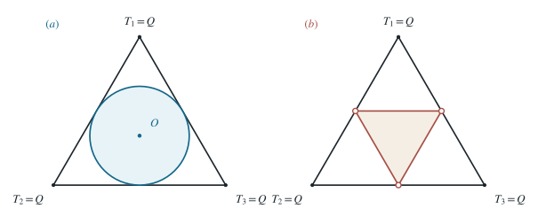

三碎块与三光子的能量允许域
用等边三角形编码三份能量，并从动量矢量的闭合条件精确画出三等质量碎块和三光子的可行域。
1 题目
1.1 物理情境
一个初始静止的物体爆炸为三个质量相等的碎块，爆炸释放的总动能为 。三碎块动能分别为 。用高为 的等边三角形内一点 到三边的垂直距离，依次表示三份能量。
1.2 物理过程
爆炸前总动量为零，爆炸后碎块动量的矢量和仍为零。另比较一个静止初态衰变为三个总能量同为 的 光子的情形，要求三份光子能量也满足总动量为零。
1.3 已知参数和理想化假设
碎块遵循非相对论动能关系 ；光子遵循 且每个真实光子的能量严格为正。只研究能量、动量守恒给出的运动学可行性，不再施加具体衰变的相互作用选择定则。
1.4 求解目标
分别确定（1）三等质量碎块，（2）三个真实光子所对应的三角形内可行点的完整范围及边界；说明边界上的共线与零能情形。

能量三角形按重心坐标精确构造。左图圆周包含于碎块可行域；右图中位三角形的边内点包含、三个顶点排除。
2 思路与提示
动量矢量和为零，当且仅当三个动量大小能构成一个可能退化的三角形。对碎块和光子分别代入 与 。
3 解答展开 / 收起
3.1 建立能量三角形的坐标
能量守恒给出
等边三角形高取 。三个顶点坐标可选为 、、。若到 的距离分别为 ，则由面积分解得到第（1）式，且
所以能量三元组与大三角形内的点一一对应；但仍须用动量守恒筛去不可能的点。
3.2 三等质量碎块：动量闭合条件
记各碎块动量大小 。三个动量向量能首尾闭合，当且仅当三个非负数 满足所有三角不等式；等号表示共线的退化三角形。为把三条不等式合并，使用海伦公式的代数形式
是动量三角形面积。第一个因子正；其余三个因子至多有一个为负，所以第（3）式右侧非负，恰好等价于全部三角不等式。展开并代入 ，得到
因此三碎块可行的充要条件是
由第（2）式作平方计算，也可写成以三角形中心为原点的圆盘：
所以边界是大三角形的内切圆 ，圆周和内部全部允许。圆周上动量共线；与三边相切的三个点分别对应 为 及其置换，表示一个碎块静止，仍是合法的三碎块状态。中心 则对应三个等长动量两两相隔 。
3.3 三光子：线性动量关系给出中位三角形
每个光子具有 。因此动量闭合条件从 直接化为
与能量守恒联立，三个半平面 的公共部分，是连接大三角形三边中点的闭中位等边三角形。若允许“零能量的光子”作为形式极限，其三个顶点 及置换也满足守恒式。
但题中要求确有三个光子，每个必须有正能量，所以实际的运动学允许域为
中位三角形的三个顶点须排除；三条边除端点外均可取到。边内点有一个 ，另两光子能量均正且共线同向，与第 个光子的传播方向相反，动量仍闭合。严格不等式 的内部点对应不共线的光子动量。
4 方法与讨论
几何图并非对原题图片的描摹：它由第（2）式的重心坐标生成，因此顶点、中点、内切圆及边界关系精确。两种允许域的差异只来自色散关系：非相对论碎块的 给出圆盘，光子的 给出中位三角形。